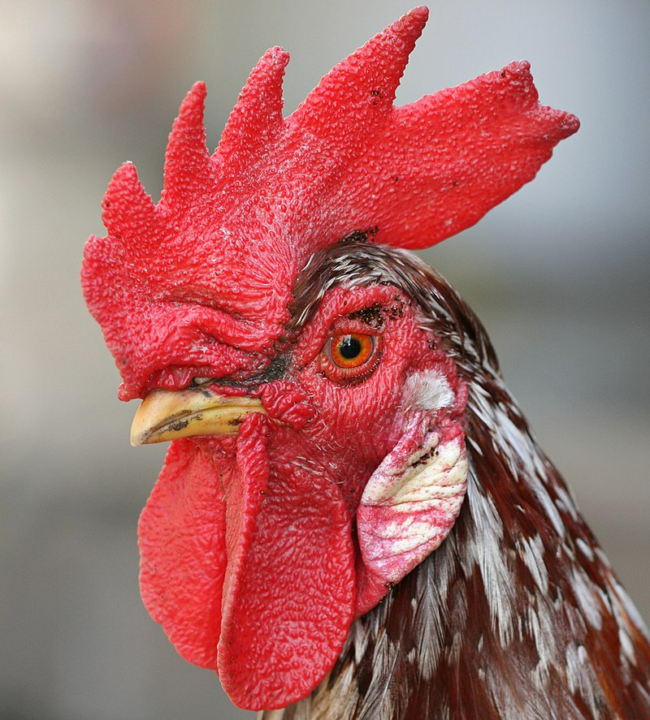

Möwen
Möwen sind am Wasser lebende Vögel, deren Körper perfekt an ihren Lebensraum angepasst sind. So sind die Zehen durch Schwimmhäute verbunden und ihre Flügel fürs Segelfliegen modifiziert. Möwen ernähren sich hauptsächlich von Tieren, sind aber Allesfresser und nehmen auch Abfälle und Aas zu sich. Unverdauliche Bestandteile werden als Gewölle herausgewürgt. Möwen trinken auch Meerwasser und sondern Salz durch spezielle Drüsen am Kopf aus. Möwen sind Bodenbrüter und nisten meist in Kolonien. Die Küken sind direkt in der Lage zu schwimmen und zu laufen, bleiben aber als Nesthocker im Nest. Die Jungvögel werden nach 3-9 Wochen flügge. Man unterscheidet zwischen sieben Gattungen und 55 Arten, die bis zu 30 Jahre alt werden können.

Bild einer adulten Mittelmeermöwe (Larus michahellis) im Brutkleid von HejaSverige! , lizenziert unter CC BY-SA 3.0.
{kind=link}

Ei einer Mittelmeermöwe von Roger Culos, lizenziert unter CC BY-SA 4.0.
{kind=link}
Tauben
Tauben sind eine sehr große Familie von Vögeln mit 42 Gattungen und über 300 Arten, die nahezu überall auf der Welt vorkommen. In Mitteleuropa kommen aber nur fünf Arten vor. Tauben ernähren sich von pflanzlicher Nahrung, welche sie unzerteilt verschlucken. Die einfachen Nester werden von ein bis zwei Jungvögeln belegt, die durch die Kropfmilch beider Geschlechter ernährt werden. Die Küken wachsen schnell und sind bereits nach zwei Wochen flügge. Bei uns kommt hauptsächlich die Stadttaube vor. Tauben sind sehr symbolträchtig z.B. als Friedenstaube oder als Turteltaube.
Die Stadttaube (Columba livia forma domestica) von Felix Abraham , lizenziert unter PD.
{kind=link}
Wappen des Ortsteils Friedensdorf von Udo Kamm, verändert durch User:Flow2 , lizenziert unter PD.
.svg?uselang=de#/media/File:Wappen_Friedensdorf_(Dautphetal).svg){kind=link}
Hochzeitstauben
Oft werden hier auch Hochzeitstauben gehalten, die nur einen sehr schlechten Orientierungssinn haben und daher nicht wieder zurückfinden können. Sie werden nur auf Schönheit gezüchtet und vor ihrem „Einsatz“ oft in kleinen Käfigen ohne die Möglichkeit zum Freiflug gehalten. Nach dem Freilassen sind die Tiere auf sich allein gestellt, orientierungslos und aufgrund ihrer weißen Farbe eine leichte Beute für Greifvögel.
Hochzeitstaube von kieutruongphoto (pixabay), lizenziert unter PD.
Haushuhn
Das Haushuhn ist eine Züchtung und ist das häufigste Haustier des Menschen. Die Größe variiert abhängig von der Züchtung von 250g – 10kg und können bis zu 1m groß werden. Hühner besitzen ausgeprägten Sexualdimorphismus, das bedeutet, dass sich Männchen und Weibchen in ihrem Aussehen deutlich unterscheiden: So besitzen Männchen (1) einen größeren Kamm und ein längeres farbenfroheres Gefieder als das Weibchen (2). Das Männchen ist größer und wiegt meist 1kg mehr als das Weibchen. Hühner sind bodenorientierte Tiere, die aber einige Meter fliegen können. Hähne markieren durch Krähen akustisch ihr Revier, was früher als Zeitangabe genommen wurde. Hühner sind Allesfresser und scharren für die Nahrungssuche meist mit ihren Füßen im Boden. Ein Haushuhn kann 250-300 Eier im Jahr legen, wenn ihnen täglich das gelegte Ei weggenommen wird. Wird dies nicht getan beginnt die Henne zu brüten, wobei die Brutdauer 21 Tage beträgt.
Haushahn (Gallus gallus domesticus) von Muhammad Mahdi Karim (pixabay), lizenziert unter GFDL.
.jpg){kind=link}
Greifvögel
Vögel, die der Ordnung der Greifvögel zugeordnet werden, sind größtenteils Fleischfresser. Zu ihnen gehören die Habichtartigen, Fischadler, Sekretäre und Neuweltgeier. Falkenartige werden nicht dazugezählt, sondern sind den Papageien am nächsten verwandt. Greifvögel sind oft sehr große Vögel, die fast in jedem Ökosystem der Erde zu finden sind. Durch ihre Ernährungsweise sind sie mit langen Greifklauen und scharfen Schnäbeln ausgestattet, was sie zu effizienten Räubern macht. Sie erbeuten Säuger, Vögel, Reptilien, Amphibien, Fische und Wirbellose. Außerdem ernähren sie sich teilweise von Aas.
Der Rabengeier (Coragyps atratus) von Ken Thomas, lizenziert unter PD.
{kind=link}

Der Sekretär (Sagittarius serpentarius, lizenziert unter CC BY-SA 3.0.
#/media/Datei:Sagittarius_serpentarius_Sekret%C3%A4r.JPG){kind=link}
Der Fischadler (Pandion haliaetus) von MartinD62, lizenziert unter CC BY-SA 4.0.
{kind=link}
Der Rotmilan (Milvus milvus) von Thomas Kraft, lizenziert unter CC BY-SA 2.5.
.jpg){kind=link}
Voliere
Diese Vogelvoliere ist ein Käfig für Vögel, der größeren Freiflugraum für die Tiere bietet. Neben einem größeren Außenteil gibt es einen kleineren festen Schutzraum. In einer Außenvoliere werden den Vögeln naturnahe Luft- und Witterungsverhältnisse geboten, sodass sich kranke oder verletzte Wildvögel gut erholen können, bis sie wieder in die Wildnis entlassen werden können.